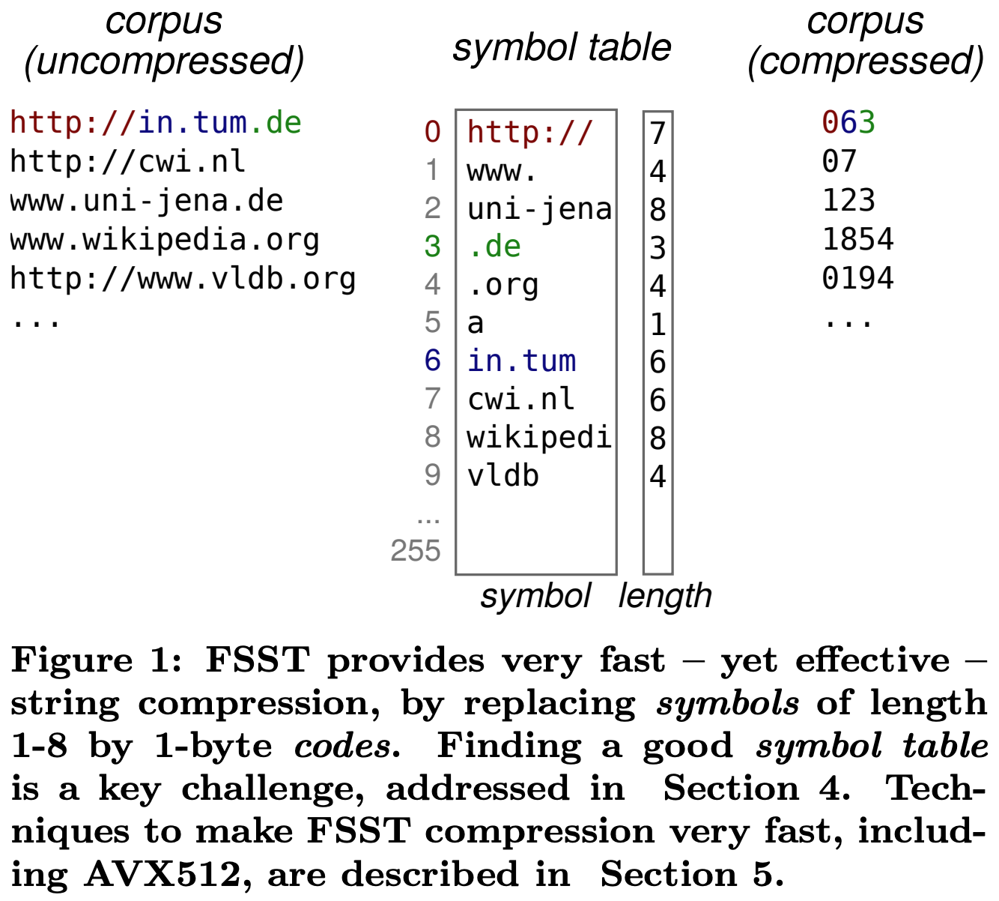
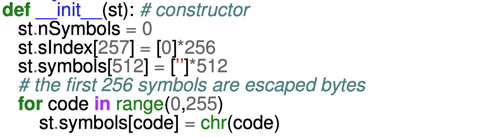
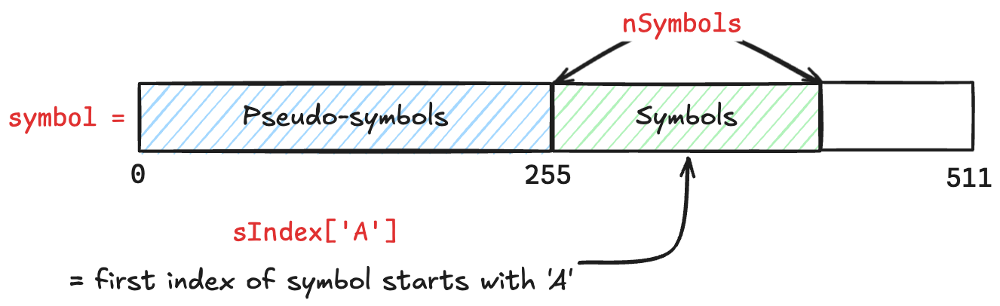
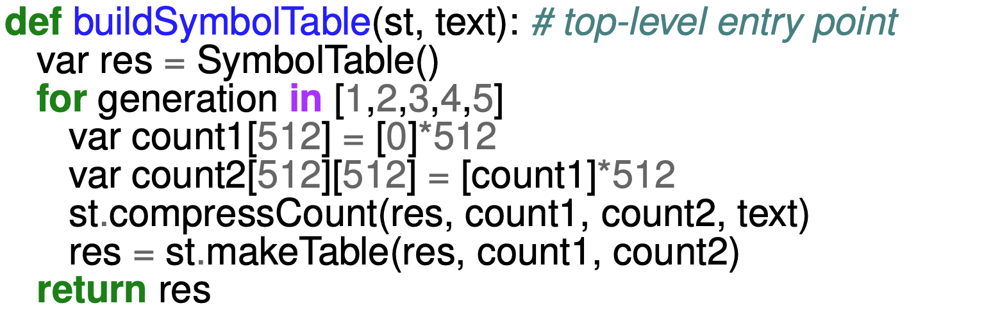
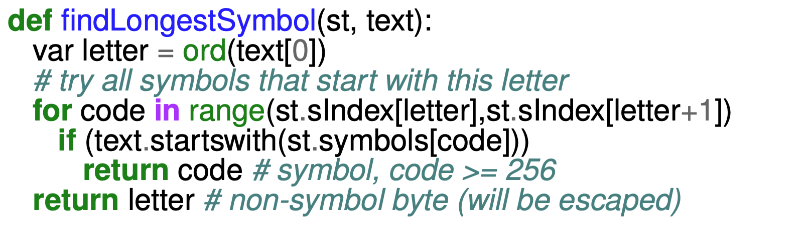
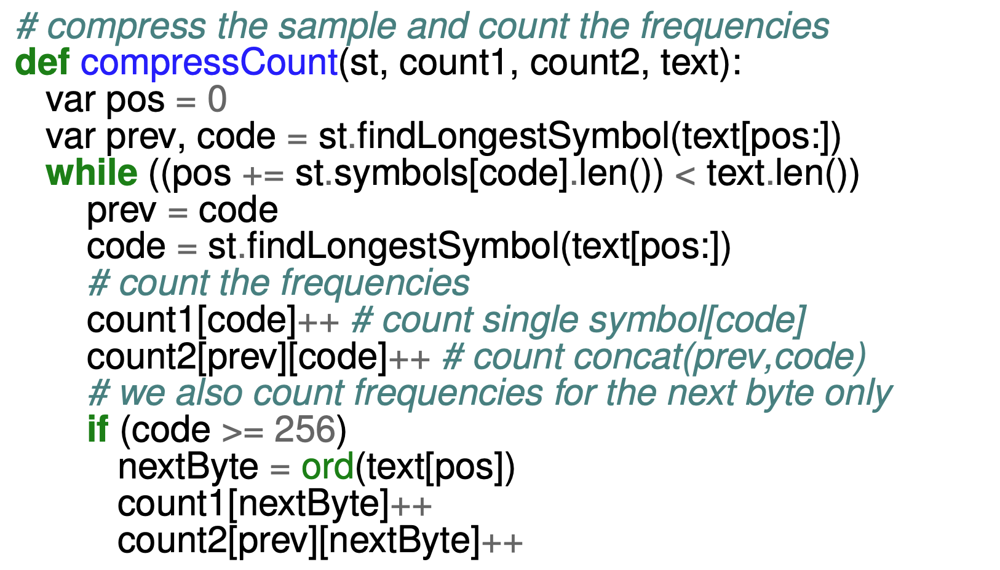
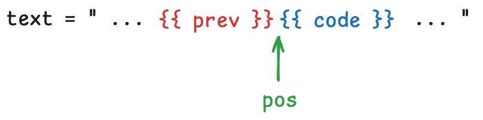
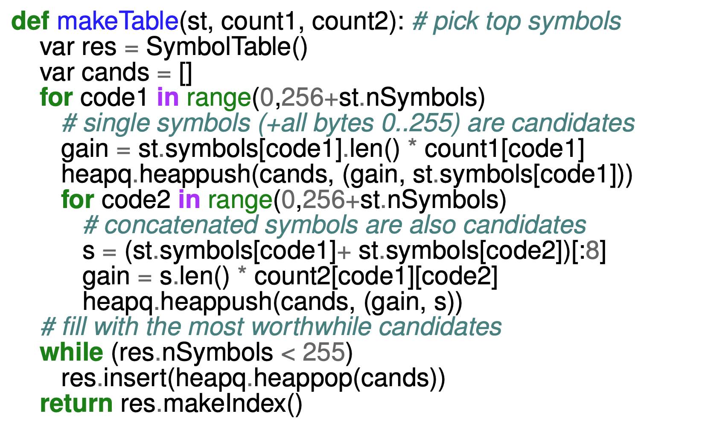
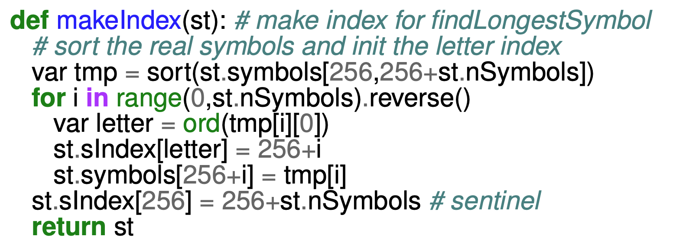

참고한 것들
원본 논문
- 이 글은 FSST: Fast Random Access String Compression, VLDB’20 에서 핵심 아이디어만 요약한 글입니다.
- 별도의 명시가 없으면, 본 논문에서 그림을 가져왔습니다.
FSST
- 이건 2020년 VLDB 에 소개된 string compression 방법이다.
- 방식은 “치환” 이라는 점에서 Dictionary Encoding 이랑 비슷한데, 좀 차이점이 있다. 더 자세한 내용은 아래에서 설명해 주마.
- FSST 의 특징은 이름이 시사하는 바처럼, (1) Symbol Table (2) Fast, (3) Static 이다.
특징 1) Symbol Table

- 이 Symbol Table 은 한마디로 정리하면, Frequency-based substring substitution 이다. 이게 뭔뜻인지 알아보자.
Substring-substitution
- Dictionary 가 개별 string domain 와 code 간의 mapping 이었다면,
- FSST 의 Symbol Table 은 최대 8byte (8 chars) 길이의, string domain 내의 substring (이것을 Symbol 이라고 부른다) 과 1byte code 간의 mapping 이다.
- 위 그림 보면 쉽게 이해된다:
http://in.tum.de가 세 개의 Symbol (0:"http://",6:"in.tum",3:".de") 을 이용해063으로 표현되는 방식이다.
- 위 그림 보면 쉽게 이해된다:
- 이 substring-substitution 방식은 실제 데이터를 관찰했을 때 비슷하지만 다른 문자열들이 많다는 결론에서 나온 것이다.
- 이런 점에서 domain 전체에 대한 exact match 를 요하는 dictionary 에 비해 더 효율적으로 compression 이 가능하다.
Frequency-based
- Symbol Table 의 code 는 1byte 이고, 따라서 모든 Symbol 이 담기는 것이 아니라 가장 빈도가 높은 255개만 담긴다.
- 근데 왜 256개가 아니고 255개일까? 이건 Escape 를 위해 code 하나 (
255) 는 reserved 해놓았기 때문이다.- Symbol 의 개수가 255 개로 고정되어 있기 때문에, 분명히 어떤 놈은 이 Symbol 들로는 표현되지 않을 것이고, 그런 놈들을 처리하기 위해 Escape code
255가 있는 것. - Escape code 뒤에는 문자 하나 (1byte) 가 오고, decompression 도중 이 Escape code 를 만나면 Symbol Table 에서 symbol 을 찾는 것이 아닌 바로 다음에 오는 이 문자를 result 에 넣는다.
- Symbol 의 개수가 255 개로 고정되어 있기 때문에, 분명히 어떤 놈은 이 Symbol 들로는 표현되지 않을 것이고, 그런 놈들을 처리하기 위해 Escape code
특징 2) Fast
- Symbol Table 을 보고 값을 치환하면 되기 때문에, decompression 과정이 아주 빠르다.
- 논문에는 이걸 더 빠르게 하기 위해 SIMD 와 같은 더 많은 최적화가 설명되어 있다. 궁금하면 직접 읽어보시라.
특징 3) Static
- 이 Symbol Table 은 생성된 뒤에는, compression 및 decompression 과정에서 변경되지 않는다 (즉, Static 하다).
- 이건 Compressed data query 가 가능하다는 장점이 있다.
- Block (string domain 의 sequence) 이 compressed 되어 있기 때문에, 여기에의 데이터를 가지고 꼼지락대고 싶다면 이것을 먼저 decompression 해야 하지만,
- 개별적으로 Symbol table 을 이용해 치환하면 부분적으로도 decompression 이 가능하기 때문에, 전체를 decompression 하는 overhead 를 없앨 수 있다.
- 혹은, 역으로 상대방을 compression 하는 방법도 사용할 수 있다.
- 가령
WHERE절의=연산자로 문자열 비교를 하는 상황이라고 해보자. - 그럼 compressed domain 을 decompression 하여 비교할 수 있지만,
- 비교하고자 하는 uncompressed value 를 compression 하여 비교하는 것도 가능하다는 소리.
- 가령
- 이건 유일한 “상태” 인 Symbol Table 이 변경되지 않는다는 특징에 기반을 두고 있다. 하지만 LZ4 와 같은 애들은, compression 과 decompression 과정에서 이런 “상태” 가 바뀌기 때문에, 이런 compressed data query 를 사용할 수 없다.
Generating Symbol Table: Bottom-Up Symbol Table Construction
요약 실패
- 짧고 깔끔하게 정리하고 넘어가려 했는데 요약이 잘 안되네요.
- 긴 글 참고 읽어봅시다.
논문 "Section 4. Symbol Table Construction"
- 논문에는 이러한 symbol table 생성 방법까지 오는 여정에 대해서도 설명되어 있다.
- Naive 하게 접근했을 때 발생하는 문제점인 Dependency problem 과 이를 해결하기 위한 첫번째 시행착오인 Suffix array 방식에 대해 더 알고 싶으면 논문을 참고하자.
- 그럼 딱 봐도 이 Symbol Table 을 어떻게 만드느냐에 따라 성능이 크게 좌우된다는 것을 알 수 있다. 그럼 이 문제의 Symbol Table 을 만드는 방법에 대해 알아보자.
- 우선 간략하게 설명하면, 아래의 과정을 총 5번 (5 Generation) 반복하며 symbol table 을 점진적으로 개선시키는 방식이다.
- 이전 Generation 에서의 symbol 들 중 어떤 symbol 을 하나 고른다.
- (1) 의 symbol 에 대해 입력 corpus 상에서 뒤에 연이어 나오는 또 다른 symbol 과의 조합 (즉, concat 이라고 이해하면 된다.) 을 알아낸다.
- (1) 과 (2) 의 두 symbol 로 compress 를 해보며 이 symbol 들이 몇번이나 사용되는지 count 한다.
- 또한 이 count 와 symbol length 를 곱한 Gain 을 계산한다.
- (1) ~ (4) 의 과정을 이전 Generation 에서의 모든 symbol 들에 대해 반복한다.
- 그럼 이전의 symbol 들, 그리고 이 symbol 들을 concat 한 새로운 symbol 들에 대한 Gain 들이 계산된다. 이들을 Gain 을 기준으로 정렬하고, 상위 255 개를 symbol table 에 추가한다.
- 다시 (1) 로 돌아가 새로운 Generation 을 시작한다.
- 그럼 이제 구체적으로 어떻게 하는지 Pseudo-code 로 알아보자.
Python style pseudo-code
Member variables
- 일단 FSST 에서는 두 가지 symbol 이 있다.
- 첫째는 그냥 symbol. 그냥 흔히 생각할 수 있는 그 symbol 이다.
- 두번째는 Pseudo-symbol 으로, 이건 위에서 말한 Escaped byte 를 위한 것이다.
- 이 Escaped byte 를 위해 그냥 block 에 등장하는 문자만 symbol table 에 넣으면 저장공간을 줄일 수 있긴 하지만,
- FSST 의 구현에는 block 에 실제로 등장하냐 와는 무관하게 ASCII 의 모든 문자 256 개를 전부 넣어놓고 시작한다.
- 즉, 일종의 시간복잡도와 공간복잡도 사이에의 trade-off 간에 공간복잡도 보다는 시간복잡도를 절약하는 선택을 한 셈.
- 이때 각 member variable 들을 확인해 보자.


nSymbols는 그냥 symbol 의 개수를 나타낸다.- 따라서 처음에는 당연히 그냥
0으로 초기화된다.
- 따라서 처음에는 당연히 그냥
symbols는 모든 symbol 들을 모아놓은 배열이다.- 여기서 앞 256 개 에는 Pseudo-symbol 가 저장된다.
- 즉, 여기에 해당 index 에 대응되는 ASCII 문자가 들어가 있는 것.
- 여기서 볼 수 있듯이, escaped single byte 는 문자열에 등장하는 애들뿐만이 아닌 모든 문자들이 symbol 로서 등록되는 것을 알 수 있다.
- 그리고 뒤의 256 개에는 진짜 symbol 이 저장된다.
- 따라서
symbols에 저장된 전체 symbol 의 개수는 인 것. - 또한 256개의 symbol 은 (1) 알파벳 순서대로, (2) 길이가 긴 순서대로 정렬되어 있다.
- 따라서
- 여기서 앞 256 개 에는 Pseudo-symbol 가 저장된다.
Python
chr()함수
- 얘는
itoa와 동일한 기능을 한다. 즉, 정수 -> ASCII 문자 변환인 것.
sIndex는 “어떤 문자” 로 시작하는 symbol 이 위치한symbolarray 의 시작 index 들을 저장하는 놈이다.- 이게 뭔소리냐면
- 만약
'A'(ASCII: 65) 로 시작하는 symbol 이symbolarray 에서 어디에 있냐를 알고 싶으면 symbols[sIndex[65]]를 참조하면 된다는 소리다.- 그리고
symbolarray 에서 (Pseudo-symbol 들을 제외한) symbol 들은 정렬되어 있기 때문에, symbolarray 에서sIndex[65]~sIndex[66] - 1에는 모두'A'로 시작하는 symbol 들이 저장되게 된다.- 따라서
sIndex는sIndex(char) -> elementStartWithCharInSymbolArray의 함수라고 이해해도 된다.
buildSymbolTable()

- 이제 symbol table 을 생성하는 시작점인
buildSymbolTable함수를 보자. - 전체적으로 보면, 5번의 Generation 을 거치며 symbol table 이 보완되는 작업을 한다는 것을 알 수 있다.
- 여기서 첫번째
count1배열은 해당 symbol 에 대한 빈도를 나타낸다.- 즉,
count1(indexOfSymbolInSymbolArray) -> countOfTheSymbol의 관계인 것. - 따라서 Pseudo-symbol 까지 해서 512크기가 되는 것.
- 즉,
- 그리고 두번째
count2배열은 두 symbol 를 합쳤을 때의 빈도를 나타낸다.- 즉,
count2(indexOfSymbolInSymbolArray, indexOfNextSymbolInSymbolArray) -> countOfCombinedSymbol의 관계인 것.
- 즉,
- 이 두 count 들을
compressCount()함수로 계산해낸 다음, 계산해낸 count 들을 이용해makeTable()로 symbol table 을 고쳐나가는 작업을 5번 반복하는 것이다. - 그럼 이제
compressCount()부터 어떤 짓을 하는지 볼텐데, 그 전에 이 함수에서 사용하는 helper 함수인findLongestSymbol()을 먼저 보고 가자.
findLongestSymbol()
한줄 요약
- 인자로 받은 text 에 대한 Longest prefix symbol 을 찾아주는 것

- 우선
letter에 text 의 시작문자에 대한 ASCII 정수가 담기고, sIndex에서 이 letter 로 시작하는 symbol 들을 순회하며 알맞은 symbol 을 찾게 된다.- 위 에서 말한것 처럼,
sIndex는 어떤 문자에 대한 ASCII 정수값을 받아 해당 문자로 시작하는 symbol 들이symbolarray 에서 어디부터 있는지를 나타내기 때문에, sIndex[letter]부터sIndex[letter + 1]까지를 돌면 해당letter로 시작하는 모든 symbol 들을 다 반복문으로 돌릴 수 있다.
- 위 에서 말한것 처럼,
- 이때 이 loop 을 탈출하는 것은 prefix match 인것을 알 수 있다.
- 위 에서 말한것 처럼,
symbol은 알파벳과 길이가 긴 순 으로 정렬되어 있기에, - 가장 먼저 매칭되는 symbol 이 곧 가장 길이가 긴 것이기 때문.
- 위 에서 말한것 처럼,
- 그리고 loop 을 다 도는 동안 매칭되는 symbol 이 없다면, escape 해야 한다는 소리이고, 그냥
letter가 반환된다.- 여기서
letter는 그냥 ASCII 정수이기 때문에 256 보다 작을 것이고, 따라서findLongestSymbol을 호출하는 놈은 리턴값이 256 보다 큰 값인지 아닌지로 symbol 인지 pseudo-symbol 인지 판단할 수 있다.
- 여기서
compressCount()
한줄 요약
- 현재의
symbol기준, 각 symbol 에 대한 count (count1) 와 두 symbol 의 조합에 대한 count (count2) 계산하기

- 좀 긴데, 차근차근 살펴보자.
- 일단
findLongestSymbol()로pos가 가리키는 지점에서부터의 longest prefix symbol 을 찾아code에 넣는다. - 그리고 해당 symbol 의 길이만큼
pos를 옮겨준 뒤,code를prev에 복사해 넣고, 또 한번findLongestSymbol()을 돌려 다음code를 찾는다. - 이후 뭔 짓을 한 뒤, 다음 loop 에서
codesymbol 길이만큼pos를 옮겨주고,prev를code로 설정해 준 뒤,code를 새로 구해준다. - 따라서 각 loop 에서
pos,prev,code가 다음과 같이 유지된다는 것을 알 수 있다.

- 이때, 매 loop 에서
count1와count2를 계산해 준다.code하나에 대한 count 를 1 증가시켜준다. 당연히 하나의 symbol 에 대한 count 이므로count1을 업데이트한다.prev와code에 대한 count 를 1 증가시킨다. 연이은 symbol 조합에 대한 count 이므로count2를 업데이트한다.- 그리고,
code가 256 보다 크다면, 이놈이 Pseudo-symbol 이 아니라는 의미이다. 따라서,prev뒤이어 나오는code뿐 아니라 Pseudo-symbol 에 대한 조합도 count 를 증가시킨다.- 이것은
prev와code모두 longest symbol 정책으로 선택되기에, 이 방식으로는 중간 크기의 symbol 에 대해서는 반영되지 않는 문제점을 보완하기 위한 것이다. - 즉,
prev뒤에 Single byte extension 을 조합한 symbol 또한 반영하여 longest 만을 고집하여 발생하는 문제점을 없애주기 위함이다.
- 이것은
makeTable()
한줄 요약
- Symbol 들에 대한 Gain 을 계산하고 정렬해 상위 255개를 symbol table 에 추가한다.

- 크게 세 부분으로 나뉜다.
- compressCount() 로 구한 count 를 이용해 Gain 을 구하고, 이것으로 정렬된
candarray 만들기- 일단
code1에 대한 loop 에서는, Pseudo-symbol (0 ~ 255) 과 그냥 symbol (256 ~ 256 + nSymbols) 까지 쭉 돌며 Gain 을 계산하고, heap 을 이용해 정렬하며cand에 넣는다. - 그리고
code2에 대한 중첩 loop 에서는, 마찬가지로 Pseudo-symbol 과 그냥 symbol 을 쭉 돌며code1 + code2의 concat 에 대한 Gain 을 계산하고 정렬하여cand에 넣는다.
- 일단
candarray 로부터 255 개를 꺼내어 symbol table 구성하기cand가 Gain 으로 정렬되어 있기 때문에 이 중 상위 255개를 골라 symbol table 에 넣는다.
sIndex새로고침하기
makeIndex()
한줄 요약
- Gain 기준으로 정렬되어 있던 것을 알파벳순 (Lexicographical order) 로 재정렬하며
sIndex값을 업데이트한다.

- 우선
sort()으로 symbol 구간 (256 ~ 256 +nSymbols) 을 알파벳순으로 정렬한tmp를 하나 준비한다. - 그리고 loop 을 돌며
sIndex를 업데이트하는데,- 일단 한번의 loop 에서는 다음과 같이 업데이트한다:
tmp의 번째 원소의 첫번째 문자letter에 대해sIndex의letterindex 값을 로 업데이트한다.- 그리고
symbolarray 에서의 이 인덱스에 해당하는 값이 번째 원소가 되게 한다. - 이렇게 함으로써, 어떤 ‘문자’ 를
symbolarray 에서의 index 로 변환하는sIndex값이 업데이트된다.
- 근데 여기서 고려할 점은
tmp의 역방향으로 loop 을 돈다는 점이다. 즉, 값은 loop 가 돌며 감소하는 값이다.- 이렇게 함으로써 정렬된
tmp내에서 어떤 ‘문자’ 로 시작하는 symbol 들의 첫 index 가sIndex에 저장될 수 있게 한다. - 가령
tmp = [abc, acd, ad]였다고 해보자. - 그럼
ad->acd->abc순서로 loop 를 돌면, 결국에는'a'로 시작하는 제일 첫 symbol 인abc가 마지막에 덮어씌워지며sIndex에는abc에 대한 index 가 저장되는 것이다.
- 이렇게 함으로써 정렬된
- 일단 한번의 loop 에서는 다음과 같이 업데이트한다:
#draft 예시
- 논문에 예시가 있긴 한데, 위의 Pseudo-code 와는 좀 다르다. 따라서 일단 생략하고 나중에 정리하자..